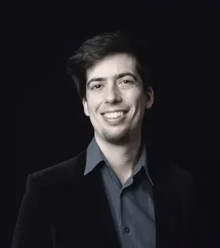
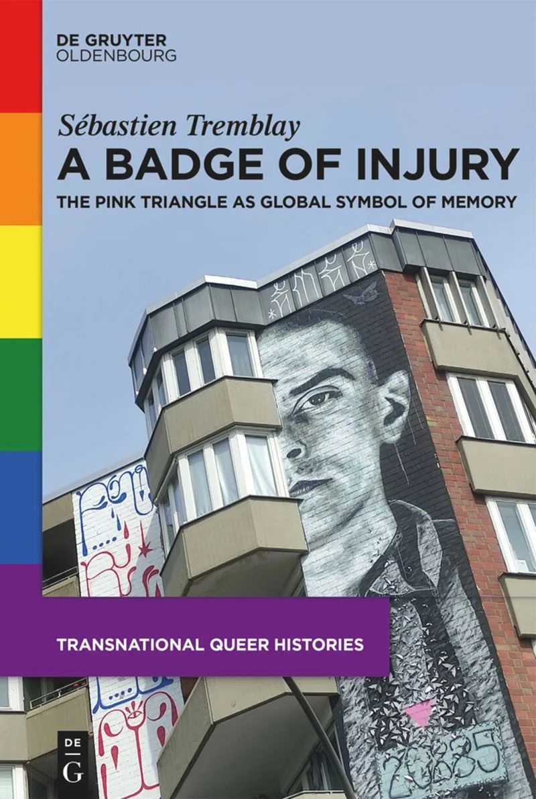

2023A Badge of Injury: The Pink Triangle as Global Symbol of Memory
Berlin: De Gruyter Oldenbourg · Transnational Queer Histories, vol. 2 · ISBN 978-3-11-106675-2
Publisher / DOI ↗Histories of queer memory, global connections and European mobility — exploring how identities, symbols and landscapes take shape across borders.
2026 teaching award · Faculty III, Europa-Universität Flensburg View distinction ↗

I am a historian at Europa-Universität Flensburg. My research brings together queer and sexuality history, global history, memory studies and the cultural history of Europe.
My monograph A Badge of Injury examines the pink triangle as a global symbol of queer memory. My ongoing work turns to the history of walking, leisure mobility and European cultural landscapes since the nineteenth century.
I completed my doctorate at Freie Universität Berlin (FU Berlin) in 2020 and have held research positions in Berlin and London.
Research profile based on publicly available university information.
From collective memory and transatlantic queer movements to mobility and the making of European landscapes.
Research on hiking, walking associations and leisure mobility in the historical construction of German and European landscapes.
University research profile ↗How queer movements reinterpreted histories of National Socialist persecution through symbols, cultural memory and transatlantic networks.
Explore the book ↗Exploring historical ideas of mobility, racialisation, time and solidarity in queer print media and transnational movements.
Read working paper ↗LaWa — Landschaften des Wandelns
Interdisciplinary research on changing cultural landscapes and practices of mobility in European history. University project listing ↗
These paths are made for walking
Leisure mobility, European space-making and German cultural landscapes since the nineteenth century.
NN — Further funded projects, grants or collaborations
Open a category, then select an individual publication to see bibliographic information and available links.

De Gruyter Oldenbourg · Transnational Queer Histories, volume 2. An investigation of visual symbolism, memory and queer cultural networks across regions.
View at publisher ↗Berlin: De Gruyter Oldenbourg · Transnational Queer Histories, vol. 2 · ISBN 978-3-11-106675-2
Publisher / DOI ↗German History 40(4), pp. 563–582
DOI ↗With Manuela Bauche, Patricia Piberger and Hannah Tzuberi · German Historical Institute London Bulletin 44(2), pp. 32–85
SCRIPTS Working Paper 21/2022
Working paper ↗Revue d’Allemagne et des pays de langue allemande 53(2), pp. 379–396
DOI ↗With Margrit Pernau · Contributions to the History of Concepts 15(2), pp. 7–28
DOI ↗INVERTITO – Jahrbuch für die Geschichte der Homosexualitäten 21, pp. 179–202
Global Histories 1(1), pp. 61–78
DOI ↗In To Be Seen: Queer Lives 1900–1950, pp. 328–341 · Hirmer Verlag
The New Fascism Syllabus, 16 November 2023
Read article ↗Zeitgeschichte-online
Read article ↗Journal of the History of Ideas Blog, 21 March 2023
Read article ↗The New Fascism Syllabus, 1 June 2021
Read article ↗Based on the EUF publication record. Items listed there as “in preparation” have not been presented here as published. Please check completeness, updated publication dates and citation style before public release. EUF publication list ↗
Select each position or degree for further information. Dates and affiliations follow the university profile.
Europa-Universität Flensburg, Germany
Freie Universität Berlin (FU Berlin), Germany
Goldsmiths, University of London, UK
Freie Universität Berlin (FU Berlin), Germany
Freie Universität Berlin (FU Berlin) · Dissertation on the pink triangle as a transatlantic symbol
Humboldt-Universität zu Berlin / Freie Universität Berlin (FU Berlin)
Université de Montréal, Canada
Faculty teaching award for the course “Der deutsche Wald: Mythos, Raum, Landschaft, Natur” (B.A. Bildungswissenschaften). Announced 8 April 2026.
University announcement ↗Berlin International College of Research and Graduate Training · Freie Universität Berlin (FU Berlin) (FU Berlin).
University CV ↗Funding for own research proposal; see university CV.
University CV ↗Prize awarded at the 16th Annual Conference, University College Cork.
University CV ↗Freie Universität Berlin (FU Berlin) (FU Berlin).
University CV ↗NN — funding body, project title, funding period and role
Courses currently listed at Europa-Universität Flensburg, with space for earlier teaching.
Proseminar · Europa-Universität Flensburg
Übung · Europa-Universität Flensburg
NN — course title, semester, university, and description to be added
Course information: EUF staff profile ↗
Documented lectures, public talks and conference contributions. Click an entry for the event details and original source.
Rainbow Days · Europa-Universität Flensburg · Public lecture and discussion with Prof. Dr. Astrid Schwabe
Source ↗Margins of Memory Speaker Series · Leibniz ScienceCampus, Regensburg
Source ↗NN — event, venue, exact date, and link to be added
Research collaborations, public lectures and university teaching inquiries.
Europa-Universität Flensburg
Seminar for History and History Education
Tallinn 1 · Room TAL 219
Mitscherlich-Nielsen-Straße 1a
24943 Flensburg, Germany
sebastien.tremblay@uni-flensburg.de
Office hours: Wednesdays, 15:00–16:00 (by appointment)